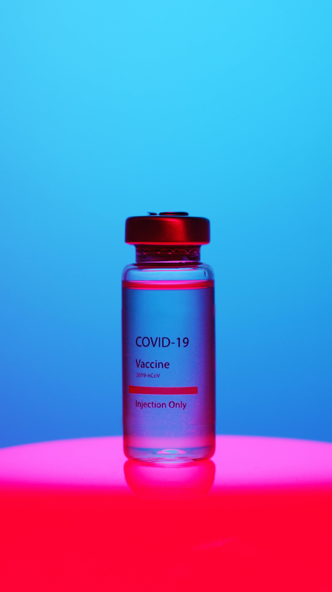

![]()
#install.packages("ggplot2")
#install.packages("dplyr")
#install.packages("broom")
#install.packages("ggpubr")
#install.packages("tidyverse")Introduction

Problem of research: What are the determinants of COVID-19 vaccination intention?
Objective: To identify the determinants of COVID-19 vaccination through an application of the Theory of Planned Behavior.
Hypothesis:
H1: Control beliefs have a direct impact on COVID-19 vaccination intention.
H2: Utility beliefs have a direct impact on COVID-19 vaccination intention.
H3: Social norm beliefs have a direct impact on COVID-19 vaccination intention.
Methodology
Sample: 551 Polish participants.
Study Design: The original research used a structural equation modeling (Drążkowski & Trepanowski, 2022) but, in this case, I’m using a multiple linear regression to explain the necessary proccess that a research must have with this design. Therefore, I’m doing a secondary analysis.
Multiple Regression Analysis: Step by step
Steps to prove the hypothesis
A. Model Evaluation
- Regression coeficients and r-square
- Interpretation
B. Regression Model Assumtions
- Lineality between IVs and Dv
- Independence of observations: The observation from our model are independent.
- Homoscedasticity: The errors from our model have equal variance.
- Normality of Errors: The errors from our model are normally distributed.
C. Additional information
- Multicollinality: evaluate if the IVs are redundant.
- Diagnostics: to assess the overall goodness-of-fit.
A. Model Evaluation
A1. Regression coeficients and r-square
Install packages
load the packages
library("foreign")
library(ggplot2)
library(dplyr)
library(broom)
library(ggpubr)
library(tidyverse)
library(readr)
library(car)Load the database
Mydata <- read.spss("data/COVID_data.sav",to.data.frame=T,use.value.labels=FALSE)
View(Mydata)
summary(Mydata$SE_Total) Min. 1st Qu. Median Mean 3rd Qu. Max.
3.00 12.00 15.00 15.42 18.00 21.00 Perform the linear regression analysis
Intention_lm <- lm(IN_Total ~ SN_Total + BC_Total + AT_Total, data = Mydata)
summary(Intention_lm)
Call:
lm(formula = IN_Total ~ SN_Total + BC_Total + AT_Total, data = Mydata)
Residuals:
Min 1Q Median 3Q Max
-11.4622 -1.2412 0.1199 1.3464 11.0907
Coefficients:
Estimate Std. Error t value Pr(>|t|)
(Intercept) -1.71571 0.36855 -4.655 4.07e-06 ***
SN_Total 0.36218 0.03976 9.109 < 2e-16 ***
BC_Total 0.29052 0.03483 8.341 6.00e-16 ***
AT_Total 0.45369 0.03504 12.946 < 2e-16 ***
---
Signif. codes: 0 '***' 0.001 '**' 0.01 '*' 0.05 '.' 0.1 ' ' 1
Residual standard error: 2.457 on 547 degrees of freedom
Multiple R-squared: 0.7865, Adjusted R-squared: 0.7853
F-statistic: 671.5 on 3 and 547 DF, p-value: < 2.2e-16A2. Interpretation of Bs ajusted
About Subjective Norms,
Prediction: For each point obtained in the scale of subjective norms, the intenton to COVID-19 vaccination intention will increase 0.36 points.
Explanation: Subjective norms had a direct and positive effect on COVID-19 vaccination intention it was statistically significant.
About Behavioral Control,
Prediction: For each point obtained in the scale of Behavioral Control, the intenton to COVID-19 vaccination intention will increase 0.29 points.
Explanation: Behavioral Control had a direct and positive effect on COVID-19 vaccination intention and it was statistically significant.
About Attitude Toward Covid-19 vaccination,
Prediction: For each point obtained in the scale of Attitude Toward Covid-19 vaccination, the intenton to COVID-19 vaccination intention will increase 0.45 points.
Explanation: Attitude Toward Covid-19 vaccination had a direct and positive effect on COVID-19 vaccination intention and it was statistical significance.
The model with these three determinants explain 78% of variance of COVID-19 vaccination intention.
B. Regression Model Assumtions
B1. Lineality between IVs and Dv
The relationship between IVs and DV must be lineal.
plot(IN_Total ~ SN_Total, data = Mydata)
abline(lm(IN_Total ~ SN_Total, data = Mydata), col = "red")It’s observed that there is a linear relationship between Subjective Norms and COVID-19 Vaccination Intention
plot(IN_Total ~ BC_Total, data = Mydata)
abline(lm(IN_Total ~ BC_Total, data = Mydata), col = "red")It’s observed that there is a linear relationship between Behavioral Control and COVID-19 Vaccination Intention
plot(IN_Total ~ AT_Total, data = Mydata)
abline(lm(IN_Total ~ AT_Total, data = Mydata), col = "red")It’s observed that there is a linear relationship between Attitude toward Covid-19 vaccination and COVID-19 Vaccination Intention
B2. Independence of observations
The covariances of errors must be cero.
The observation from our model are independent. This was fulfilled when each observation was made by one participant.
Evaluation:
Use the Durbin-Watson Test. This is useful to test autocorrelation of residuals that must be cero.
library(car) # In this package is Durbin-Watson Test
durbinWatsonTest(Intention_lm) lag Autocorrelation D-W Statistic p-value
1 -0.1210717 2.241997 0
Alternative hypothesis: rho != 0H0: There is not correlation among the residuals. H1: The residuals are autocorrelated.
If the p-value is less than 0.05, you would reject the null hypothesis and conclude that there is evidence of autocorrelation in the residuals.
If the p-value is greater than 0.05, you would fail to reject the null hypothesis, suggesting that there is insufficient evidence to conclude that there is autocorrelation in the residuals.
In this result, since the p-value (0.002) is less than 0.05, we would conclude that there is evidence of autocorrelation in the residuals.
Although, It was mention that D-W statistic is between 0 to 4. Values between 1.5 and 2.5 is ok. Therefore, in this test, we will consider it. In this study it was 2.24 which mean that is ok.
B3. Homocedasticity
The residuals are distribuided homogeneusly on the dependent variable. So they have iqual variance.
Evaluation: - Diagrama de dispersión, Harrison-McCabe or Goldfeld-Quandt tests.
Goldfeld-Quandt tests
# install.packages("lmtest")
library(lmtest)
gqtest(Intention_lm)
Goldfeld-Quandt test
data: Intention_lm
GQ = 1.0384, df1 = 272, df2 = 271, p-value = 0.3781
alternative hypothesis: variance increases from segment 1 to 2H0: residuals have homogeneous variance. H1: residuals haven’t homogeneous variance.
As p value was 0.3781 greater than 0.05, We have insufficient evidence to reject the null hypothesis. So we can say that residuals have homogeneous variance.
Harrison-McCabe test
hmctest(Intention_lm)
Harrison-McCabe test
data: Intention_lm
HMC = 0.49002, p-value = 0.369H0: residuals have homogeneous variance. H1: residuals haven’t homogeneous variance.
As p value was 0.379 greater than 0.05, We have insufficient evidence to reject the null hypothesis. So we can say that residuals have homogeneous variance.
B4. Normality of Errors
The residuals show a normal distribution.
Evaluation: - Residuals distribution, Q-Q plot, and Shapiro-Wilk test.
hist(residuals(Intention_lm)) par(mfrow=c(2,2))
plot(Intention_lm)
par(mfrow=c(1,1))C. Additional information
C1. Multicollinality:
Evaluate if the IVs are redundant. This happen when VIs are highly correlated.
Evaluation: - Tolerance (TOL) and Variance Inflation of Factor (VIF)
vif(Intention_lm)SN_Total BC_Total AT_Total
2.984366 1.899331 2.991759 library(see)
library(performance)
x<-check_collinearity(Intention_lm)
x# Check for Multicollinearity
Low Correlation
Term VIF VIF 95% CI Increased SE Tolerance Tolerance 95% CI
SN_Total 2.98 [2.61, 3.44] 1.73 0.34 [0.29, 0.38]
BC_Total 1.90 [1.70, 2.16] 1.38 0.53 [0.46, 0.59]
AT_Total 2.99 [2.62, 3.45] 1.73 0.33 [0.29, 0.38]plot(x)# los valores de VIF <6C2. Diagnostics.
Evaluation:
- Cook distances.
values don’t must be bigger than 1.
#the car package (Companion to Applied Regression)
# Load the car package
library(car)
# Compute influence measures, including Cook's distance
influence <- influence.measures(Intention_lm)
# Access Cook's distance from the influence object
cook_dist <- influence$infmat[,7] #I put [,7] because that its the column that contains cook distances.
summary(cook_dist) Min. 1st Qu. Median Mean 3rd Qu. Max.
0.000e+00 4.156e-05 3.211e-04 2.811e-03 1.619e-03 1.340e-01 # Plot Cook's distance
plot(cook_dist, pch = 19, main = "Cook's Distance Plot")
abline(h = 4 * mean(cook_dist), col = "red", lty = 2)Interpretation: It’s ok because any points is greater than 1.
Referencias
- Dariusz Drążkowski & Radosław Trepanowski (2022) Reactance and perceived disease severity as determinants of COVID-19 vaccination intention: an application of the theory of planned behavior, Psychology, Health & Medicine, 27:10, 2171-2178, DOI: 10.1080/13548506.2021.2014060